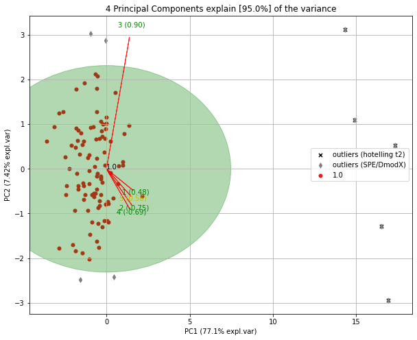
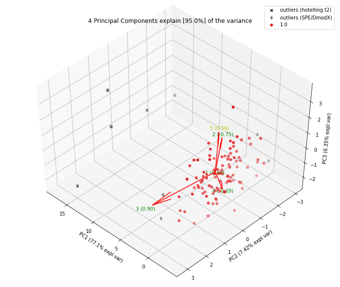
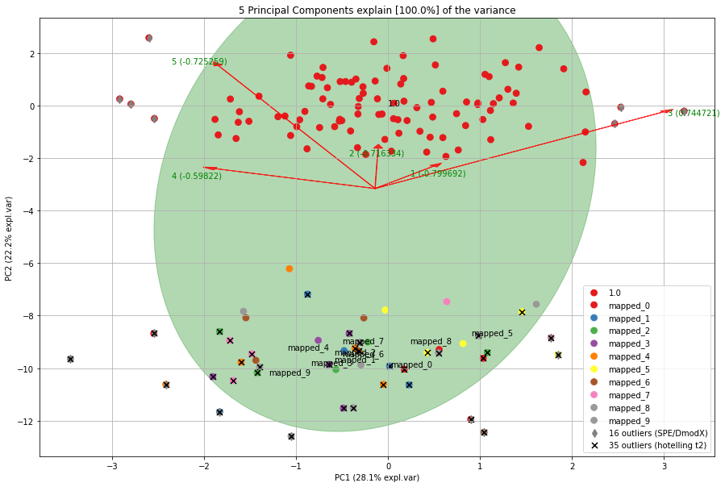
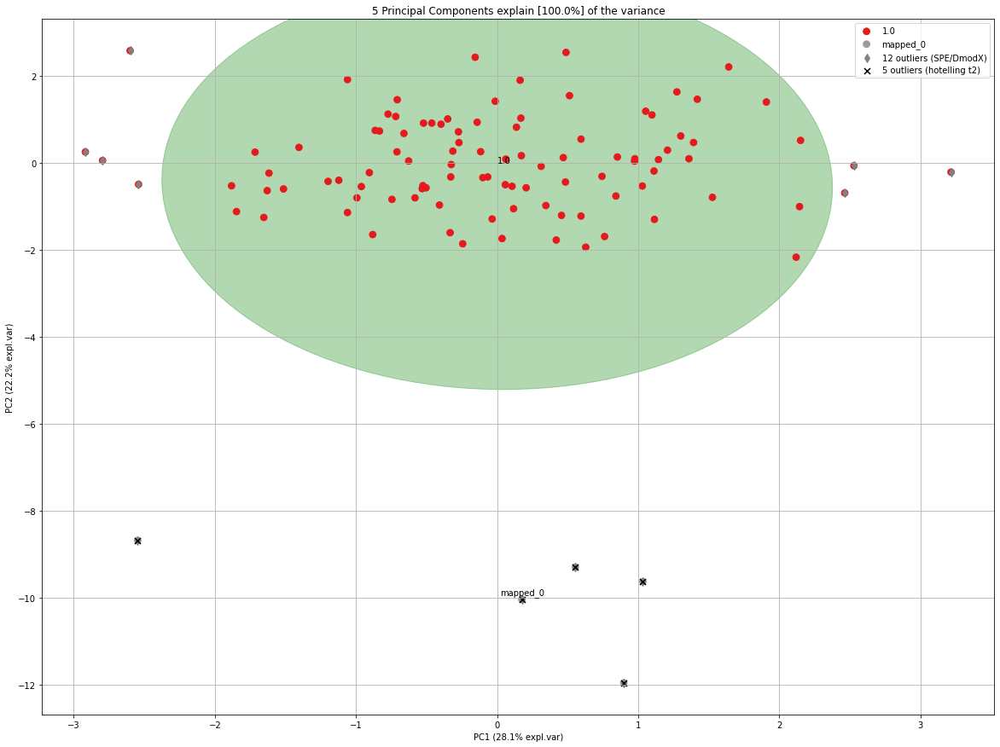

Hotelling T2
To detect outliers across the multidimensional space of PCA, the hotellings T2 test is implemented. It works by computing the chi-square tests across the top n_components: default is PC1 to PC5. The reason for not using more PC’s is that it is expected that the highest variance (and thus the outliers) will be seen in the first few components. Going deeper into PC space may therefore not be required. Nevertheless, the depth is optional.
The hotellings T2 test outputs a P-value matrix (samples x PCs), which are are subsequently combined using fishers method. This allows to determine outliers with its ranking (strongest to weak). The alpha parameter determines the detection of outliers (default: 0.05).
# Import libraries
from pca import pca
import pandas as pd
import numpy as np
# Create dataset with 100 samples
X = np.array(np.random.normal(0, 1, 500)).reshape(100, 5)
# Create 5 outliers
outliers = np.array(np.random.uniform(5, 10, 25)).reshape(5, 5)
# Combine data
X = np.vstack((X, outliers))
# Initialize model. Alpha is the threshold for the hotellings T2 test to determine outliers in the data.
model = pca(alpha=0.05, detect_outliers=['ht2', 'spe'])
# Fit transform
results = model.fit_transform(X)
# [pca] >Column labels are auto-completed.
# [pca] >Row labels are auto-completed.
# [pca] >The PCA reduction is performed to capture [95.0%] explained variance using the [5] columns of the input data.
# [pca] >Fitting using PCA..
# [pca] >Computing loadings and PCs..
# [pca] >Computing explained variance..
# [pca] >Number of components is [4] that covers the [95.00%] explained variance.
# [pca] >The PCA reduction is performed on the [5] columns of the input dataframe.
# [pca] >Fitting using PCA..
# [pca] >Computing loadings and PCs..
# [pca] >Outlier detection using Hotelling T2 test with alpha=[0.05] and n_components=[4]
# [pca] >Outlier detection using SPE/DmodX with n_std=[2]
The information regarding the outliers are stored in the dict ‘outliers’ (see below). The outliers computed using hotelling T2 test are the columns y_proba, y_score and y_bool. The outliers computed using SPE/DmodX are the columns y_bool_spe, y_score_spe, where y_score_spe is the euclidean distance of the center to the samples. The rows belong the same rows on the input samples.
print(results['outliers'])
# or
print(model.results['outliers'])
# y_proba y_score y_bool y_bool_spe y_score_spe
# 1.0 9.799576e-01 3.060765 False False 0.993407
# 1.0 8.198524e-01 5.945125 False False 2.331705
# 1.0 9.793117e-01 3.086609 False False 0.128518
# 1.0 9.743937e-01 3.268052 False False 0.794845
# 1.0 8.333778e-01 5.780220 False False 1.523642
# .. ... ... ... ... ...
# 1.0 6.793085e-11 69.039523 True True 14.672828
# 1.0 2.610920e-291 1384.158189 True True 16.566568
# 1.0 6.866703e-11 69.015237 True True 14.936442
# 1.0 1.765139e-292 1389.577522 True True 17.183093
# 1.0 1.351102e-291 1385.483398 True True 17.319038
SPE/Dmodx
Outlier can be detected using SPE/DmodX (distance to model) based on the mean and covariance of the first 2 dimensions of X. On the model plane (SPE ≈ 0). Note that the SPE or Hotelling’s T2 are complementary to each other.
model.biplot(legend=True, SPE=True, HT2=True)
model.biplot3d(legend=True, SPE=True, HT2=True)
# Create only the scatter plots
model.scatter(legend=True, SPE=True, HT2=True)
model.scatter3d(legend=True, SPE=True, HT2=True)
 |
 |
Selection of the Outliers
Selecting the outliers can be usefull to remove them from the dataset or for deeper investigation.
# Select the outliers
Xoutliers = X[results['outliers']['y_bool'],:]
# Select the other set
Xnormal = X[~results['outliers']['y_bool'],:]
Detect new unseen outliers
After fitting a model on the data, you may want to use the model in a later stage to detect outliers on unseen data. Detection of outliers is performed in the transform function and does not require any additional action. An example is shown in the code block below.
# Import libraries
from pca import pca
import pandas as pd
import numpy as np
# Create dataset with 100 samples
X = np.array(np.random.normal(0, 1, 500)).reshape(100, 5)
# Initialize model. Alpha is the threshold for the hotellings T2 test to determine outliers in the data.
model = pca(alpha=0.05, detect_outliers=['ht2', 'spe'])
# Fit transform
model.fit_transform(X)
# Create 5 outliers
X_unseen = np.array(np.random.uniform(5, 10, 25)).reshape(5, 5)
# Transform new "unseen" data into existing PC space.
PCnew = model.transform(X_unseen)
# Plot image
model.biplot(SPE=True, HT2=True)
 |
The transform function will add the new samples to the readily fitted space and update the outlier parameters (default is True). If for example outliers are seen over and over again, they may not be an outlier anymore at a certain point. If you do not want to keep all outliers as being an outlier, set the update outlier parameter to False update_outlier_params=False. In case you do not want to add any samples. Let me demonstrate this by example:
from pca import pca
import pandas as pd
import numpy as np
# Create dataset with 100 samples
X = np.array(np.random.normal(0, 1, 500)).reshape(100, 5)
# Initialize model. Alpha is the threshold for the hotellings T2 test to determine outliers in the data.
model = pca(alpha=0.05, detect_outliers=['ht2', 'spe'])
# model = pca(alpha=0.05, detect_outliers=None)
# Fit transform
model.fit_transform(X)
for i in range(0, 10):
# Create 5 outliers
X_unseen = np.array(np.random.uniform(5, 10, 25)).reshape(5, 5)
# Transform new "unseen" data into existing PC space.
PCnew = model.transform(X_unseen, row_labels=np.repeat('mapped_' + str(i), X_unseen.shape[0]), update_outlier_params=True)
# Scatterplot
model.scatter(SPE=True, HT2=True)
# Biplot
# Model.biplot(SPE=True, HT2=True)
In each iteration, the elips is growing towards the outliers. If you look carefully at the number of outliers, you may notice that the number of outliers is not increasing but even decreasing at a certain point.
 |
Detection of outliers without PCA
If desired, the outliers can also be detected directly using the hotelling T2 and/or SPE/DmodX functionality. For demonstration purposes I use the PCs from the results but any other dataset would also work.
import pca
outliers_hot = pca.hotellingsT2(results['PC'].values, alpha=0.05)
outliers_spe = pca.spe_dmodx(results['PC'].values, n_std=2)